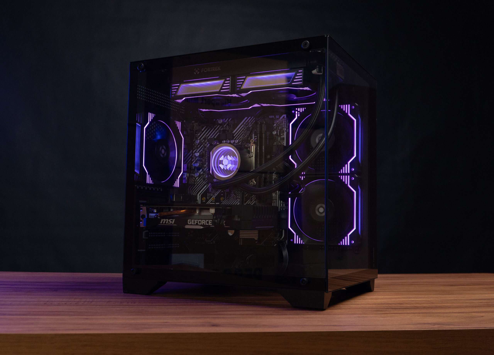
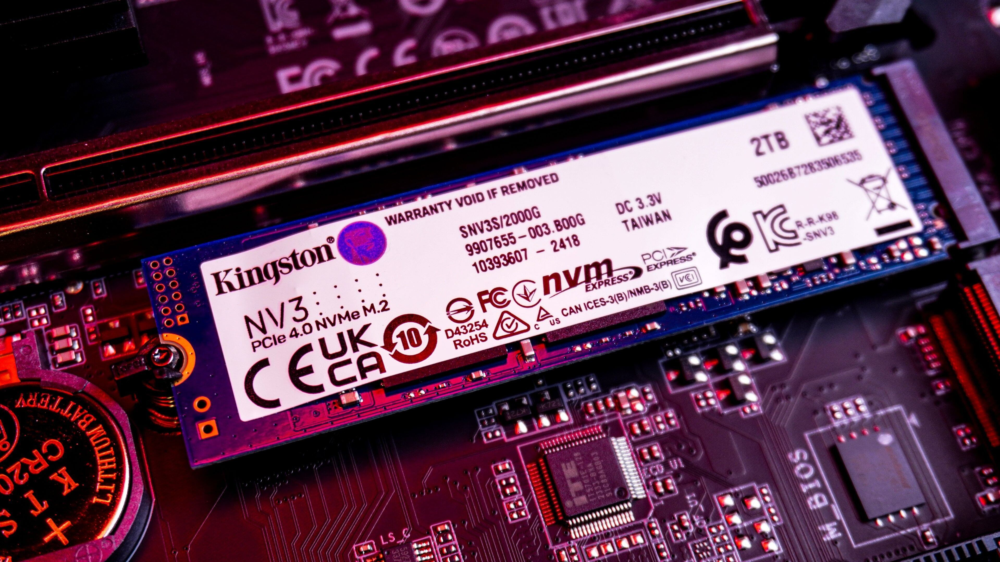

01 • Conexão
Placa-mãe
Interliga processador, memória, armazenamento e demais componentes.
Ver conteúdo →Um site de apresentação criado para explorar os principais componentes de um computador e entender como cada peça participa do funcionamento de um sistema.
Selecione um componente para aprofundar.
Interliga processador, memória, armazenamento e demais componentes.
Ver conteúdo →
Armazena temporariamente dados e instruções utilizados pelo sistema.
Ver conteúdo →
Executa instruções, realiza cálculos e coordena operações do computador.
Ver conteúdo →
Processa e renderiza imagens, gráficos e aplicações visuais.
Ver conteúdo →

Armazena arquivos, programas e dados de forma persistente.
Ver conteúdo →